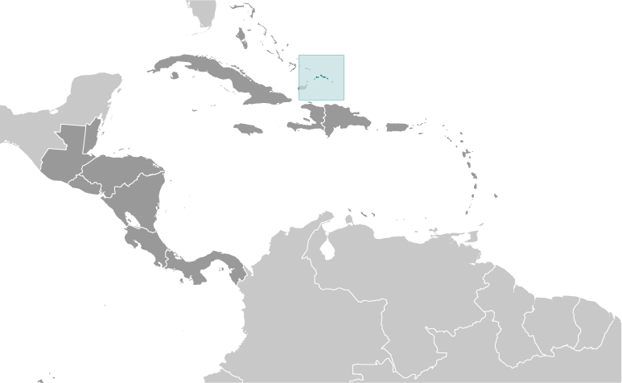
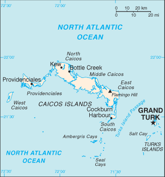
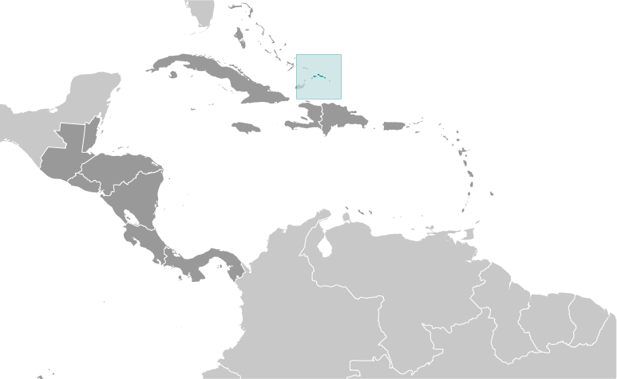
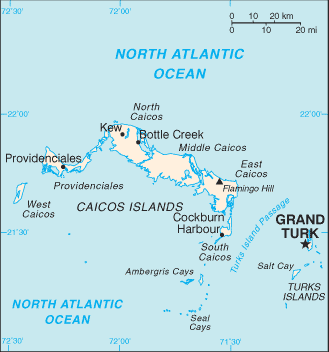

Central America ::
Turks and Caicos Islands
-
Introduction :: Turks and Caicos Islands
-
Background:The islands were part of the UK's Jamaican colony until 1962, when they assumed the status of a separate Crown colony upon Jamaica's independence. The governor of The Bahamas oversaw affairs from 1965 to 1973. With Bahamian independence, the islands received a separate governor in 1973. Although independence was agreed upon for 1982, the policy was reversed and the islands remain a British overseas territory. Grand Turk island suffered extensive damage from Hurricane Maria on 22 September 2017 resulting in loss of power and communications as well as damage to housing and businesses.
-
Geography :: Turks and Caicos Islands
-
Location:two island groups in the North Atlantic Ocean, southeast of The Bahamas, north of HaitiGeographic coordinates:21 45 N, 71 35 WMap references:Central America and the CaribbeanArea:total: 948 sq kmland: 948 sq kmwater: 0 sq kmcountry comparison to the world: 186Area - comparative:2.5 times the size of Washington, DCLand boundaries:0 kmCoastline:389 kmMaritime claims:territorial sea: 12 nmexclusive fishing zone: 200 nmClimate:tropical; marine; moderated by trade winds; sunny and relatively dryTerrain:low, flat limestone; extensive marshes and mangrove swampsElevation:0 m lowest point: Caribbean Sea48 highest point: Blue Hill on Providenciales and Flamingo Hill on East CaicosNatural resources:spiny lobster, conchLand use:agricultural land: 1.1% (2011 est.)arable land: 1.1% (2011 est.) / permanent crops: 0% (2011 est.) / permanent pasture: 0% (2011 est.)forest: 36.2% (2011 est.)other: 62.7% (2011 est.)Irrigated land:0 sq km (2012)Population distribution:eight of the thirty islands are inhabited; the island of Providenciales is the most populated, but the most densely populated is Grand TurkNatural hazards:frequent hurricanesEnvironment - current issues:limited natural freshwater resources, private cisterns collect rainwaterGeography - note:include eight large islands and numerous smaller cays, islets, and reefs; only two of the Caicos Islands and six of the Turks group are inhabited
-
People and Society :: Turks and Caicos Islands
-
Population:53,701 (July 2018 est.)country comparison to the world: 207Nationality:noun: noneadjective: noneEthnic groups:black 87.6%, white 7.9%, mixed 2.5%, East Indian 1.3%, other 0.7% (2006 est.)Languages:English (official)Religions:Protestant 72.8% (Baptist 35.8%, Church of God 11.7%, Anglican 10%, Methodist 9.3%, Seventh-Day Adventist 6%), Roman Catholic 11.4%, Jehovah's Witnesses 1.8%, other 14% (2006 est.)Age structure:0-14 years: 21.62% (male 5,916 /female 5,694)15-24 years: 13.7% (male 3,657 /female 3,698)25-54 years: 52.97% (male 14,316 /female 14,128)55-64 years: 6.96% (male 1,988 /female 1,748)65 years and over: 4.76% (male 1,181 /female 1,375) (2018 est.)population pyramid:
 The World Factbook Field Image ModalCentral America :: Turks and Caicos Islands Print
The World Factbook Field Image ModalCentral America :: Turks and Caicos Islands Print Image DescriptionThis is the population pyramid for Turks and Caicos Islands. A population pyramid illustrates the age and sex structure of a country's population and may provide insights about political and social stability, as well as economic development. The population is distributed along the horizontal axis, with males shown on the left and females on the right. The male and female populations are broken down into 5-year age groups represented as horizontal bars along the vertical axis, with the youngest age groups at the bottom and the oldest at the top. The shape of the population pyramid gradually evolves over time based on fertility, mortality, and international migration trends.
Image DescriptionThis is the population pyramid for Turks and Caicos Islands. A population pyramid illustrates the age and sex structure of a country's population and may provide insights about political and social stability, as well as economic development. The population is distributed along the horizontal axis, with males shown on the left and females on the right. The male and female populations are broken down into 5-year age groups represented as horizontal bars along the vertical axis, with the youngest age groups at the bottom and the oldest at the top. The shape of the population pyramid gradually evolves over time based on fertility, mortality, and international migration trends.
For additional information, please see the entry for Population pyramid on the Definitions and Notes page under the References tab.Median age:total: 33.8 yearsmale: 34.1 yearsfemale: 33.5 years (2018 est.)country comparison to the world: 91Population growth rate:2.09% (2018 est.)country comparison to the world: 44Birth rate:14.9 births/1,000 population (2018 est.)country comparison to the world: 127Death rate:3.3 deaths/1,000 population (2018 est.)country comparison to the world: 221Net migration rate:9.5 migrant(s)/1,000 population (2017 est.)country comparison to the world: 10Population distribution:eight of the thirty islands are inhabited; the island of Providenciales is the most populated, but the most densely populated is Grand TurkUrbanization:urban population: 93.1% of total population (2018)rate of urbanization: 1.77% annual rate of change (2015-20 est.)Major urban areas - population:5,000 GRAND TURK (capital) (2018)Sex ratio:at birth: 1.05 male(s)/female (2017 est.)0-14 years: 1.04 male(s)/female (2017 est.)15-24 years: 0.97 male(s)/female (2017 est.)25-54 years: 1.02 male(s)/female (2017 est.)55-64 years: 1.18 male(s)/female (2017 est.)65 years and over: 0.8 male(s)/female (2017 est.)total population: 1.02 male(s)/female (2017 est.)Infant mortality rate:total: 9.8 deaths/1,000 live births (2018 est.)male: 12.2 deaths/1,000 live births (2018 est.)female: 7.3 deaths/1,000 live births (2018 est.)country comparison to the world: 135Life expectancy at birth:total population: 80.1 years (2018 est.)male: 77.3 years (2018 est.)female: 83 years (2018 est.)country comparison to the world: 44Total fertility rate:1.7 children born/woman (2018 est.)country comparison to the world: 173HIV/AIDS - adult prevalence rate:NAHIV/AIDS - people living with HIV/AIDS:NAHIV/AIDS - deaths:NAMajor infectious diseases:note: active local transmission of Zika virus by Aedes species mosquitoes has been identified in this country (as of August 2016); it poses an important risk (a large number of cases possible) among US citizens if bitten by an infective mosquito; other less common ways to get Zika are through sex, via blood transfusion, or during pregnancy, in which the pregnant woman passes Zika virus to her fetus
Education expenditures:3.3% of GDP (2015)country comparison to the world: 137People - note:destination and transit point for illegal Haitian immigrants bound for the Bahamas and the US -
Government :: Turks and Caicos Islands
-
Country name:conventional long form: noneconventional short form: Turks and Caicos Islandsabbreviation: TCIetymology: the Turks Islands are named after the Turk's cap cactus (native to the islands and appearing on the flag and coat of arms), while the Caicos Islands derive from the native term "caya hico" meaning "string of islands"Dependency status:overseas territory of the UKGovernment type:parliamentary democracy (House of Assembly); self-governing overseas territory of the UKCapital:name: Grand Turk (Cockburn Town)geographic coordinates: 21 28 N, 71 08 Wtime difference: UTC-5 (same time as Washington, DC, during Standard Time)Administrative divisions:none (overseas territory of the UK)Independence:none (overseas territory of the UK)National holiday:Birthday of Queen ELIZABETH II, usually celebrated the Monday after the second Saturday in JuneConstitution:several previous; latest signed 7 August 2012, effective 15 October 2012 (The Turks and Caicos Constitution Order 2011) (2018)Legal system:mixed legal system of English common law and civil lawCitizenship:see United KingdomSuffrage:18 years of age; universalJudicial branch:highest courts: Supreme Court (consists of the chief justice and other judges, as determined by the governor); Court of Appeal (consists of the court president and 2 justices); note - appeals beyond the Supreme Court are referred to the Judicial Committee of the Privy Council (in London)judge selection and term of office: Supreme Court and Appeals Court judges appointed by the governor in accordance with the Judicial Service Commission, a 3-member body of high-level judicial officials; Supreme Court judges serve until mandatory retirement at age 65, but terms can be extended to age 70; Appeals Court judge tenure determined by individual terms of appointmentsubordinate courts: magistrates' courtsExecutive branch:chief of state: Queen ELIZABETH II (since 6 February 1952); represented by Governor John FREEMAN (since 17 October 2016)head of government: Premier Sharlene CARTWRIGHT-ROBINSON (since 20 December 2016); first female Premier of Turks and Caicoscabinet: Cabinet appointed by the governor from among members of the House of Assemblyelections/appointments: the monarch is hereditary; governor appointed by the monarch; following legislative elections, the leader of the majority party is appointed premier by the governorLegislative branch:description: unicameral House of Assembly (19 seats; 15 members in multi-seat constituencies and a single all-islands constituency directly elected by simple majority vote, 1 member nominated by the premier and appointed by the governor, 1 nominated by the opposition party leader and appointed by the governor, and 2 from the Turks and Caicos Islands Civic Society directly appointed by the governor; members serve 4-year terms)elections: last held on 15 December 2016 (next to be held in 2020)election results: percent of vote - NA; seats by party - PDM 10, PNP 5Political parties and leaders:People's Democratic Movement or PDM [Sharlene CARTWRIGHT-ROBINSON]
Progressive National Party or PNP [Washington MISICK]International organization participation:Caricom (associate), CDB, Interpol (subbureau), UPUDiplomatic representation in the US:none (overseas territory of the UK)Diplomatic representation from the US:none (overseas territory of the UK)Flag description:blue with the flag of the UK in the upper hoist-side quadrant and the colonial shield centered on the outer half of the flag; the shield is yellow and displays a conch shell, a spiny lobster, and Turk's cap cactus - three common elements of the islands' biotaNational symbol(s):conch shell, Turk's cap cactusNational anthem:name: This Land of Ourslyrics/music: Conrad HOWELLnote: serves as a local anthem; as a territory of the UK, "God Save the Queen" is the official anthem (see United Kingdom)
-
Economy :: Turks and Caicos Islands
-
Economy - overview:The Turks and Caicos economy is based on tourism, offshore financial services, and fishing. Most capital goods and food for domestic consumption are imported. The US is the leading source of tourists, accounting for more than three-quarters of the more than 1 million visitors that arrive annually. Three-quarters of the visitors come by ship. Major sources of government revenue also include fees from offshore financial activities and customs receipts.GDP (purchasing power parity):$632 million (2007 est.)$568.3 million (2006 est.)country comparison to the world: 210GDP (official exchange rate):NAGDP - real growth rate:11.2% (2007 est.)country comparison to the world: 4GDP - per capita (PPP):$29,100 (2007 est.)country comparison to the world: 72GDP - composition, by end use:household consumption: 49% (2017 est.)government consumption: 21.5% (2017 est.)investment in fixed capital: 16.5% (2017 est.)investment in inventories: -0.1% (2017 est.)exports of goods and services: 69.5% (2017 est.)imports of goods and services: -56.4% (2017 est.)GDP - composition, by sector of origin:agriculture: 0.5% (2017 est.)industry: 8.9% (2017 est.)services: 90.6% (2017 est.)Agriculture - products:corn, beans, cassava (manioc, tapioca), citrus fruits; fishIndustries:tourism, offshore financial servicesIndustrial production growth rate:3% (2017 est.)country comparison to the world: 106Labor force:4,848 (1990 est.)country comparison to the world: 220Labor force - by occupation:
note: about 33% in government and 20% in agriculture and fishing; significant numbers in tourism, financial, and other services
Unemployment rate:10% (1997 est.)country comparison to the world: 139Population below poverty line:NABudget:revenues: 247.3 million (2017 est.)expenditures: 224.3 million (2017 est.)Fiscal year:calendar yearInflation rate (consumer prices):4% (2017 est.)0.7% (2016 est.)country comparison to the world: 158Exports:$24.77 million (2008 est.)country comparison to the world: 208Exports - commodities:lobster, dried and fresh conch, conch shellsImports:$591.3 million (2008 est.)country comparison to the world: 196Imports - commodities:food and beverages, tobacco, clothing, manufactures, construction materialsDebt - external:NA
Exchange rates:the US dollar is used
-
Energy :: Turks and Caicos Islands
-
Electricity access:population without electricity: 5,143 (2012)electrification - total population: 91% (2012)electrification - urban areas: 92% (2012)electrification - rural areas: 80% (2012)Electricity - production:235 million kWh (2016 est.)country comparison to the world: 188Electricity - consumption:218.6 million kWh (2016 est.)country comparison to the world: 191Electricity - exports:0 kWh (2016 est.)country comparison to the world: 211Electricity - imports:0 kWh (2016 est.)country comparison to the world: 213Electricity - installed generating capacity:82,000 kW (2016 est.)country comparison to the world: 183Electricity - from fossil fuels:100% of total installed capacity (2016 est.)country comparison to the world: 21Electricity - from nuclear fuels:0% of total installed capacity (2017 est.)country comparison to the world: 201Electricity - from hydroelectric plants:0% of total installed capacity (2017 est.)country comparison to the world: 208Electricity - from other renewable sources:0% of total installed capacity (2017 est.)country comparison to the world: 211Crude oil - production:0 bbl/day (2017 est.)country comparison to the world: 208Crude oil - exports:0 bbl/day (2015 est.)country comparison to the world: 209Crude oil - imports:0 bbl/day (2015 est.)country comparison to the world: 207Crude oil - proved reserves:0 bbl (1 January 2018 est.)country comparison to the world: 207Refined petroleum products - production:0 bbl/day (2015 est.)country comparison to the world: 210Refined petroleum products - consumption:1,420 bbl/day (2016 est.)country comparison to the world: 201Refined petroleum products - exports:0 bbl/day (2015 est.)country comparison to the world: 211Refined petroleum products - imports:1,369 bbl/day (2015 est.)country comparison to the world: 197Natural gas - production:0 cu m (2017 est.)country comparison to the world: 208Natural gas - consumption:0 cu m (2017 est.)country comparison to the world: 208Natural gas - exports:0 cu m (2017 est.)country comparison to the world: 203Natural gas - imports:0 cu m (2017 est.)country comparison to the world: 204Natural gas - proved reserves:0 cu m (1 January 2014 est.)country comparison to the world: 202Carbon dioxide emissions from consumption of energy:221,800 Mt (2017 est.)country comparison to the world: 198
-
Communications :: Turks and Caicos Islands
-
Telephone system:general assessment: fully digital system with international direct dialing (2015)domestic: full range of services available; GSM wireless service available (2015)international: country code - 1-649; the Americas Region Caribbean Ring System (ARCOS-1) fiber-optic telecommunications submarine cable provides connectivity to South and Central America, parts of the Caribbean, and the US; satellite earth station - 1 Intelsat (Atlantic Ocean) (2015)Broadcast media:no local terrestrial TV stations, broadcasts from the Bahamas can be received and multi-channel cable and satellite TV services are available; government-run radio network operates alongside private broadcasters with a total of about 15 stations (2007)Internet country code:.tc
-
Transportation :: Turks and Caicos Islands
-
National air transport system:number of registered air carriers: 1 (2015)inventory of registered aircraft operated by air carriers: 16 (2015)Civil aircraft registration country code prefix:VQ-T (2016)Airports:8 (2013)country comparison to the world: 164Airports - with paved runways:total: 6 (2013)2,438 to 3,047 m: 1 (2013)1,524 to 2,437 m: 3 (2013)914 to 1,523 m: 1 (2013)under 914 m: 1 (2013)Airports - with unpaved runways:total: 2 (2013)under 914 m: 2 (2013)Roadways:total: 121 km (2003)paved: 24 km (2003)unpaved: 97 km (2003)country comparison to the world: 214Merchant marine:total: 4 (2017)by type: general cargo 1, other 3 (2017)country comparison to the world: 166Ports and terminals:major seaport(s): Cockburn Harbour, Grand Turk, Providenciales
-
Military and Security :: Turks and Caicos Islands
-
Military - note:defense is the responsibility of the UK
-
Transnational Issues :: Turks and Caicos Islands
-
Disputes - international:have received Haitians fleeing economic and civil disorderIllicit drugs:transshipment point for South American narcotics destined for the US and Europe